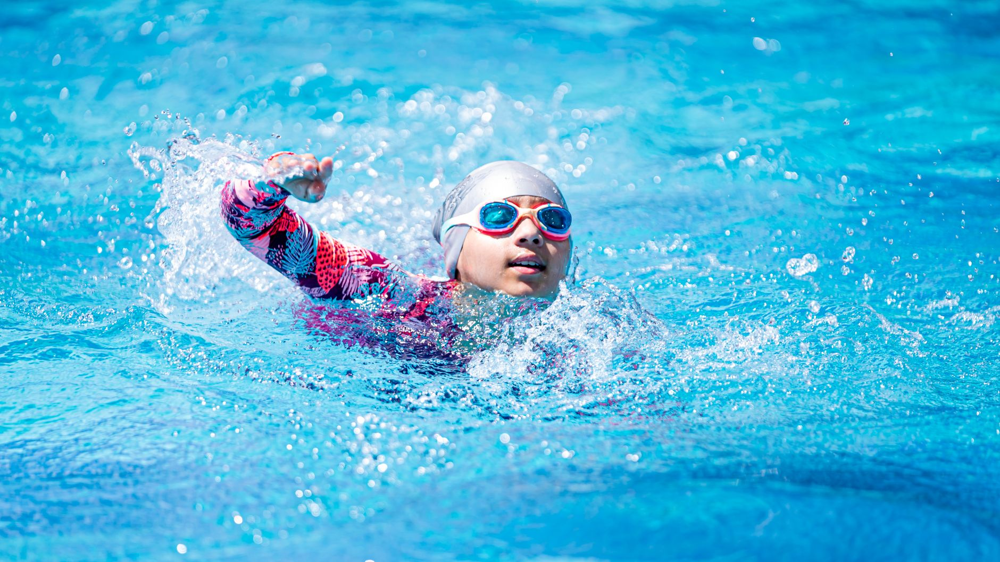

The Aquatic Sports Boom Is Real — And It's Happening Right Here in Tampa Bay
A recent report from The Business Journals highlighted how Goldfish Swim School has grown into a nationally recognized brand by doing something remarkably simple: making quality swim instruction accessible, consistent, and fun for young learners. Their success story is more than a business headline — it reflects a broader shift in how families across the country are prioritizing aquatic skills and competitive swimming for their children.
For parents in Wesley Chapel, Land O' Lakes, and the greater Tampa Bay area, this trend feels very close to home. Enrollment in youth swim programs has surged in recent years, and the reasons are both practical and aspirational. Families want their children to be safe in and around water, but they also want to give young athletes a genuine pathway to competitive sport.
Why More Families Are Investing in Aquatic Sports
The growth of swim schools nationwide points to something parents already sense intuitively: aquatic skills are foundational. Whether a child eventually pursues competitive swimming, water polo, or simply wants to be confident in the water, early and consistent training makes an enormous difference.
Research consistently shows that children who receive structured swim instruction develop stronger motor skills, improved cardiovascular health, and greater mental resilience. Beyond the physical benefits, being part of a team — whether in a swim lane or a water polo pool — teaches young athletes how to set goals, handle setbacks, and celebrate collective success.
Here are a few reasons families in the Tampa Bay area are choosing to invest in youth aquatic sports:
- Year-round training opportunities: Florida's climate makes it possible for swimmers and water polo players to train consistently throughout the year, giving them a meaningful competitive advantage.
- College recruiting pathways: Both swimming and water polo offer NCAA scholarship opportunities that many families are just beginning to discover.
- Community and belonging: Aquatic programs build tight-knit teams where young athletes support one another both in and out of the water.
- Life-saving skills: Every child who becomes a confident swimmer carries a skill that can protect their own life and the lives of others.
The Difference Between a Swim Lesson and Athlete Development
One important distinction worth understanding is the difference between general swim instruction and structured athletic development. Basic swim lessons are a wonderful and necessary starting point, but young athletes who want to compete — in USA Swimming meets, club water polo leagues, or high school varsity programs — need a different level of coaching, structure, and long-term planning.
At Nexar Aquatic Academy, the focus is squarely on that next level. Serving the Wesley Chapel and Land O' Lakes communities, Nexar combines technical skill development with competitive preparation, helping swimmers and water polo players build the habits and athleticism they need to reach their full potential.
What This Means for Your Young Athlete
If your child has ever expressed interest in swimming faster, joining a water polo team, or simply becoming more comfortable and capable in the water, now is an ideal time to explore what structured aquatic training can offer. The national momentum behind swim programs is a signal, not just a statistic — families everywhere are recognizing that aquatic sports deliver real, lasting value.
The Tampa Bay area has the facilities, the coaching talent, and the competitive culture to support young athletes at every stage of their development. Whether your child is just starting out or is ready to compete at a higher level, there has never been a better moment to dive in.
Nexar Aquatic Academy welcomes families from across the Wesley Chapel and Land O' Lakes area who are ready to take that next step. Reach out today to learn more about current programs, tryouts, and how we can help your young athlete thrive in the water.
Ready to get in the water?
First practice is completely FREE — no commitment needed.